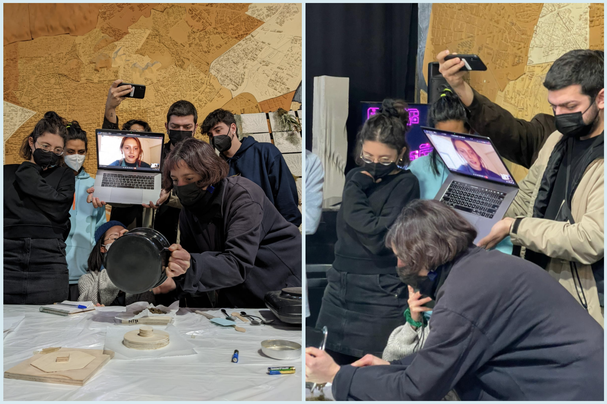

- documentation of your own exploration of one recipe and further development (modify additive, quantities, methodology)
Biomaterials set up in my kitchen.
Since I was quarantining after testing positive, I got sent a lovely biomaterials ingredient bag from Julia. I got the opportunity to test out the same recipes as the class from my home.
I set up my biomaterials space in the kitchen and gathered all the ingredients from my small kit. I decided to only work with the resin, since I had no experience working with it. I have previously worked with agar and gelatine, so it was more exciting for me to use new ingredients. I divided the resin in two, that way I could make two different recipes.
The resin had specific instructions on it: “grind even before melting” but since I didn’t have a good grinder, I simply smacked it with the back of a spoon while it was still in the bag.
Then, I placed the resin in a pot with the appropriate amount of alcohol and waited for it to melt, stirring continuously. I did not enjoy the smell, but it looked very cool.
In the meanwhile, I thought about what “filler” to include in the mixture to make it bind well. I found some old, rock hard bread I’ve been keeping for the past few weeks and decided to grate it until it became small breadcrumbs. I added the crumbs to the mixture.
- document on material sample's properties - technical, functional and emotional
I found some silicone donut moulds which I thought could be an interesting shape to explore with the resin and easy to clean and get the material out without breaking it. I haven;t seen the donut shape used in the biomaterial world, so I thought this could give it a unique property.
For the first batch, I decided to add a little bit of turmeric to make it orange. For the second batch, I added some chia seeds, blue tea powder and less bread. I was hoping the second batch would be blue, but instead it was a muddy grey, because the pine resin itself was a bit of an earthy green color. I would have preferred to use pink colorant from beetroot juice, but I did not have any in my fridge at that moment.
I belive that bright colours attract us more than dull greys or browns. We also love to look at shiny things, and they provoke great happy feelings. I think integrating colour and texture adds great value to the emotional value of the material, and as a consequence also the functional value too.
I placed some parchment paper on top of the donut moulds and squashed it as much as possible, trying to condense the material. I waited until they were completely cool and cleaned up the pot in the meanwhile (it was indeed very messy and hard to get rid of the resin). Lastly, I popped out the two little biomaterial donuts and took pictures of them
-future of the materials
Overall, I think the two donuts are very cute, but I would have loved it if they were more vibrant. Perhaps it could replace fake marble, or any products that are made out of traditional-non-biodegradable resin, such as pots, vases, decorations and more. It was interesting to notice the slight variation in texture after simply adding in some chia seeds, and how beautiful it made it look, so it would also be nice to explore this further by using different additives and seeds.
REFLECTION QUESTIONS: - document on material designers, biomaterials fundations, food waste manipulation (connect, collect, dry)
In this part, since I didn't get the chance to network during the time I was in quarantine, I will be using the second part of the course as a reference because I went around Poblenou gathering information and waste material.
On Thursday, I joined Paula & Marina’s group through a Whatsapp call whilst they were in class. We shared our Poblenou waste maps and exchanged ideas and resources about local waste we could use from businesses surrounding us. The Horchateria and Burger restaurants ended up interesting us the most, so we decided to explore the two main materials those businesses could offer: Chufa (tigernut) and Oil.
We evaluated the uses, strengths and downfalls of each material, and how they could be used in application. Some initial ideas that came to mind were making plant based leather out of the tiger nuts and making paint by mixing the oil with waste pigments. We began to do research on both opportunities, and returned to the businesses to collect their materials. We were interested a lot in the bioleather experiments done by Fab textiles and also other Kombucha bioleather projects such as SCOMPOSEA and KULTIVARES.
The material, waste chufa (tiger nut), was sourced from a nearby horchateria called El Tio Che on the rambla in Poblenou. The chufa bulbs are squeezed and used to make the drink, and then the remains excreted by the machine are the waste product, which we decided to find a second use for.
On Monday, we met up and explored the possibilities of using the chufa waste we collected the previous week. We noticed that the bag was warm and wet, and that the top of it began to mold. After scraping off the top layer, we gathered some from the center which was not yet going bad.
material exploration in class (recipes and methodologies) & drying process

I found it quite hard to follow the classes online, especially the theoretical discussions. I could barely hear what questions people were asking and I did not want to interrupt the lesson constantly. I was bummed to not be there in person. I cheered up when people started passing me around and showed me the little experiments they were working on. It was the most engaged I had felt in any of the online calls. It resulted in these funny pics, courtesy of Roberto and Paula B.
- analyze properties of your explorations (technical, functional & emotional) and think of possible applications
There is a lot of potential to create materials with all the waste that englobes us. I find that the problem lies in scaling it up from a DIY perspective into an industrial application, because that's where it would make the most impact by reaching more people. These are the areas that we may need to work on for making this possible:
Mentality towards materials:
lots of people are fine with the idea of using something once and "throwing it out" immediately. I see it in my family when they use single-use plastic cutlery, in my flatmates when they fail to compost or recycle properly, and even my peers interested in sustainability when they get take away coffee in a plastic lined cup. My emotional response to this behaviour is often getting upset, because I see that people do not care enough. I hope that we can somehow transform people's mentality and thus also behaviour towards materials and waste in general.
Ingredients for biomaterials:
We need to collect many different types of additives to prepare all these biomaterials recipes. Not everyone easily has glycerine, dehydrators or agar at hand, so I am not sure if the DIY approach to biomaterials is an appropriate sector to target. I think we should target industrial sectors, who would more easily have access to this equipment. The problem is getting there.
Collaborating: Lots of businesses around town (shops, restaurants, cafes...) produce tons of waste daily without any way to reuse it. We should design better systems not only to dispose of this waste but also to reuse it in the production pipeline.
I also believe that we should collaborate with industries that create fossil fuel based plastic and replace it by imlementing bioplastics. I see these slowly start to appear more and more in the market, but it should become even more widespread (If these bioplastics are in fact compostable, because there may be some questioning there too)
Finally, scale: At a small scale it was easy to play around and experiment with biomaterials, however if we needed to scale it, there are a lot of challenges to be faced. How do we create a logistically functionning networ? How do we transport the waste? Where do we store it? How do we be be energy efficient in the drying process? What kind of products may we create?
There is still a lot of questioning to do and problems to solve. I hope to find both the answers and solutions in the upcoming future.
Finally, here are the notes I took from this class:
Remixing Materials notes
 Biomaterials set up in my kitchen.
Biomaterials set up in my kitchen.